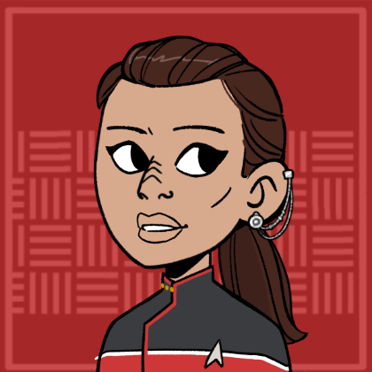

USS Hyperion
Summary
Location:: The Shackleton Expanse
Portrait:: 
Note:: A Nova class science vessel with a mission to chart the Shackleton Expanse and be among the first Federation vessels to discover what lies within.
Description
Traits
- Federation Starship
- Nova Class
- Dependable Workhorse
Namesake
The USS-Hyperion inherits it's name from a moon of Saturn.
Mission
The USS Hyperion is tasks with charting the Shackleton Expanse. It is one of just a few vessels to be the first discovering what lies in this unexplored region of space.
Mission Logs
Season 1
- Hyperion Log 0 - All Aboard:
Stardate 2030, Session: 0
The crew of the USS Hyperion is assembled by captain Kala Cerjaso for a new mission to explore the Shackleton Expanse. - Hyperion Log 1.1 - Bacchus' Irresistible Call:
Stardate 62023, Session: 1
The Hyperion was knocked out of warp by a subspace distortion while investigating a missing shuttle in the Bacchus system. On Bacchus-3, an away team found scientists mesmerized by giant monoliths—two entered and were vaporized when the structures opened.The USS Hyperion was sent to investigate the disappearance of a Starfleet science shuttle at the Bacchus system. When the Hyperion arrive, it was violently thrown out of warp by a massive subspace distortion wave. With warp-speed rendered impossible and subspace communications completely washed out by background subspace frequencies in the system, an away was sent down to Bacchus-3 to investigate the source of the distortion waves.
There, a small coalition team of Starfleet and Klingon officers seemed entranced by the giant monoliths sticking out of the surface of the planet. Soon, the scientists opened the monoliths, revealing a facility on the inside. Two of the closest scientists throw themselves into the facility, getting vaporized instantly. - Hyperion Log 1.2 - Bacchus' Irresistible Call:
Stardate 62023, Session: 2
The away team returned with the missing scientists, and Lt. Cmdr. T'Lor discovered a repeating alien signal in Janna Frye's mind via mind meld. Meanwhile, Commander Gorath met with the Klingon ship Ya'Leth, aiding in warp core repairs with help from SILAR and Bucannon. Captain K'tah, searching for his brother Brutog, warned Starfleet to stay out of the “cursed” Shackleton Expanse. Gorath challenged K'tah to act with greater courage.The away team on Bacchus-3 returned to the Hyperion with the missing science team. The science team was brought directly to the sick bay, where Lt. Cmdr. Lt. T'Lor performed a mind meld with the science officer Janna Frye, and discovered an alien recorded embedded in a repeating neural loop.
Meanwhile, Commander Gorath and visited the Klingon IKR Ya'Leth. The Klingons were struggling to get their warp core back online and were given instructions to repair it by SILAR and Bucannon.
The Klingon Captain K'tah was there looking for his brother, Brutog, who had visited the planet with Janna Frye. K'tah chastised Starfleet for entering the Shackleton Expanse, calling the sector "cursed." In the end, Rhen Gorath was able to appeal to K'tah's sense of honor and challenged him to be more daring. - Hyperion Log 1.3 - Bacchus' Irresistible Call:
Stardate 62023, Session: 3
The Hyperion crew split efforts to escape the Bacchus system, with one team investigating the monolith facility and another modifying the ship to ride a subspace wave. The away team discovered the site was built to contain something called The Displaced and recovered a mysterious artifact labeled a “key.” As the planet began forming new Monoliths, SILAR guided the Hyperion safely out of the system. Back at Narendra Station, Admiral Stoker took custody of the artifact for further study.After the missing science team had been successfully treated, the crew of Hyperion decided to tackle escape from two fronts. First, an away team would return to the planet to investigate the facility, hoping to find an off switch. At the same time, a team on the Hyperion would attempt to outfit the starship to escape the Bacchus system by riding the Subspace wave out.
The away team disabled the security system at the entrance to the monolith and navigated to the control room at the center. There a computer system informed them that the Facility was built to contained something or someone called The Displaced. Verlath was able to recognize genetic codes in the displays with telltale signs of modifications.
In the end, the team disabled the subspace distortion wave, which triggered an emergency response from the facility. A breadbox sized artifact that the computer described as a "key" was revealed, which the away team took with them. The planet produced a massive tractor beam and pulled the planet Bacchus-2 out of orbit. It began using the rocky material of the planet to create new Monoliths.
On the Hyperion, Buchanon and SILAR worked to integrate SILAR more deeply into the ship's control systems. The ship's sensors were connected directly to the nacelles to respond more quickly to changes in subspace. And SILAR's decision making processes were set as the control point for ship. SILAR was able to respond more quickly to changes in the gravitational profile of the system. Rhen Gorath piloted the waverider to meet with the Hyperion, and they all warped out of the system, back to Narendra Station.
Admiral Banna Stoker debriefed the team on Narendra Station, and took the artifact for study, assigning science officer Kassandra Pruitt to investigate. - Hyperion Log 2 - Imminent Collision:
Stardate 62078.6, Session: 4
The Hyperion made first contact with a new species made of crystal that communicated with refracted light. They crew assisted the aliens by removing an unidentified torpedo from the hull, and sent them on their way. After Narendra Station picked up an unidentified object approaching the station at high warp speeds, the USS Hyperion was sent to investigate while the station prepared for a potential attack. They found a strange crystalline starship and started rudimentary and cooperative communication with it.
The crew found an unidentified torpedo lodged into the side of the crystalline structure, seemingly made just for the purpose of attacking this kind of starship. As the hull of the ship seemed to be a living entity of some sort, Verlath organized a surgical transport procedure to remove the torpedo safely.
Once the torpedo was removed, the aliens in the ship revealed themselves: strange crystal beings who communicated through light refraction. They said thank you, and then left. - Hyperion Log 3.1 - Orion Heist Part 1:
Stardate 62098, Session: 5
The Hyperion chased an Orion freighter to the neutral zone to recover the stolen Bacchus Artifact. There a Romulan Warbird decloaked to prevent the Hyperion from taking the artifact. After the first contact with the crystalline starship, Cmdr. Gorath and SILAR spent much of their time working on deciphering the light-based language they communicated with, making some progress on terms used during the mission. Buchanan made a deal with Nax to take a crate of stem bolts off the station.
Verlath was brought into the sick bay to help stabilize Kassandra Pruitt, whose neurological functions were suddenly declining after a research project with the Bacchus Artifact. Soon after, the artifact was stolen, and the crew of the Hyperion recruited to help track it down. Collectively, they narrowed the options down to an Orion ship, the SS Castle Rock, that had left the station shortly after the theft.
The Hyperion was sent in pursuit of the Castle Rock before it could get to the neutral zone, but was not fast enough. There, the Castle Rock was found disabled: the back section crushed in by some gravitational field coming from the artifact. The Orion captain Paljara refused to hand over the artifact and warned the Hyperion to flee.
When they didn't, a Romulan Bird of Prey decloaked and announced their intention to "protect" the Orion vessel, who had been given passage rights. They also sent engineers aboard the Orion freighter to provide assistance with repairs.
Verlath was able to disguise the life signs of Enat Tara and himself. They beamed aboard the Orion vessel along with SILAR to recover the artifact as quickly as possible. Two Orions were beamed from the Castle Rock into the Hyperion's brig to keep the number of life signs consistent. - Hyperion Log 3.2 - Orion Heist Part 2:
Stardate 62098, Session: 6
An away team from the Hyperion stormed the Orion freighter and recovered the Bacchus Artifact. In their wake, a disabled Orion freighter and potential casualties. SILAR, Verlath, Enat Tara, and Ensign Eric boarded the Orion freighter to recover the Bacchus Artifact. SILAR assumed an Orion disguise and eavesdropped on an argument between the Orion captain Paljara and some Romulan officers. She seemed distressed and was unable to explain to the officers why a crew member was interfaced with the artifact.
Meanwhile, Verlath, Enat, and Eric moved to the other side of the ship to retrieve the artifact. The plan was to meet back in the middle and beam out without anyone knowing the wiser. They followed a Orion pirate to the cargo hold, where they saw 1 Orion interfaced with the Bacchus Artifact using a neural net.
Unfortunately, Enat lost his temper with Verlath and his raised voice alerted some Orion pirates in the destroyed cargo hold. While Enat laid down supressing fire and held back the Romulans at the other end of the ship, Ensign Eric shot an explosive barrel in the cargo hold. This took out 3 Orions, one of whcih was the one interfaced with the artidfact. The artifact was thrown across the room by the explosion.
During this fight, Captain Paljara hailed the Hyperion and begged Rhen Gorath to let them go with the artifiact. Paljara explained that her sister was beingheld by the Romulans and that the artifact was her ransom. Without it, her sister may be killed.
Verlath ran across to grab it, but was beaten there by a pirate, who was then stunned. Verlath brought the artifact towards the Orion previously interfaced with it and set up pattern enhancers to beam out. The away team regrouped at the pattern engancer and beamed out.
Meanwhile, Rhen Gorath had been engaging in debate and discussion with te Romulan sub-commander Thal'vaek. Commander Gorath was attempting to distract Thal'vaek until the away team could make it back to the Hyperion, and Thal'vaek was similarly trying to buy his officers time while they recovered the artifact. Thal'vaek challenged Gorath on their place in Starfleet, suggesting that all officers are just tools for government powers.
When the away team returned with the artifact, Thal'vaek found out what had happened and ordered his ship to fire on the Hyperion. The Hyperion was able to warp out of the neutral zone quickly while taking damage to their shields.
Back on Narendra Station, Admiral Banna Stoker congratulated the crew of the Hyperion and asked for the Artifact to be returned to the lab for her to inspect later. She dismissed concerns about the Orion casualties and declined to organize a rescue mission for Paljara's sister, potentially somewhere in Romulan space. - Hyperion Log 4 - Peas to Meet You:
Stardate 62139, Session: 7
The Hyperion assisted the USS Constantine in delivering a crucial agricultural exchange to a colony in the Yacci system. The crew and passengers of the Constantine had succumbed to a neurotoxin produced by Ice Peas while not in it's natural habitat. The USS Hyperion was sent to investigate the USS Constantine, a Galaxy Class starship itself tasked with transporting an agricultural exchange from the Colony on Re-Alpha to a struggling colony on Yacci. A boarding party from the Hyperion found the crew of the Constantine acting strangely. The Executive officer seemed paranoid that someone was trying to assassinate the captain. The Captain was engaged in some sort of wrestling tournament, and various other crew members were exhibiting strong emotional reactions to things around them.
When Buchanon went to engineering and found the chief engineer being consoled by a civilian from Re-Alpha, he were eating some ice peas, a fruit local to Re-Alpha. Scans found traces of tetraflouride-4, a neurotoxin which would cause different reactions from each person as a stress response. They tracked down the source of this neurotoxin to a plan on board called Ice Peas. The crop had been removed from it's natural habitat and was creating this neurotoxin in response to losing a particular fungus in it's soil. SILAR and Verlath were able to create a virus that were rewrite the genome of the Ice Pea bush to block its ability to produce tetraflouride-4. With the neurotoxin neutralized, the colony would be able to continue to Yacci and complete it's mission. - Hyperion Log 5.1 - The Pasqual Problem:
Stardate 62172, Session: 8
Admiral Banna Stoker joined the hyperion after being attacked in the Shackleton Expanse, and ordered them to head to the Pasqual system. There, Rhen Gorath refused her orders to send an away team to the planet based on Prime Directive concerns. They were then attacked by an unidentified starship that claimed the Bacchus artifact was their property. The Hyperion was performing a routine survey sweep around Narendra station when a federation runabout shuttle was encountered coming out of the Shackleton Expanse. The shuttle was damaged, and a physical slug was found embedded in the dented hull. Admiral Banna Stoker was the only one on board, carrying the Bacchus artifact with her.
Once on board the Hyperion, Banna Stoker ordered the starship to head to the Pasqual system in the Shackleton Expanse. She warned she was attacked and may have been followed, so the Hyperion was not to respond to hails and travel at maximum warp. Suspicious of these orders, the crew of the Hyperion investigated. A medical examination showed the Admiral seemed to have no influence from the Artifact's subspace signals. Her shuttles logs showed that Stoker had visited several systems in the Shackleton Expanse before arriving at the Hyperion.
The Hyperion found the planet Pasqual-1, inhabited by a late-medieval society and covered in hundreds of black neutronium monoliths. Stoker wanted an away team to investigate, but Rhen Gorath and the rest of the crew refused. Stoker was furious, and threatened to have Rhen Gorath reprimanded for disobeying orders.
Before the Hyperion could leave the system, a unidentified starship dropped out of warp and demanded Stoker hand over the artifact. They claimed that Stoker was in possession of their property. The unidentified ship attacked, and both ships have now sustained damage to their shields. - Hyperion Log 5.2 - The Pasqual Solution:
Stardate 62172, Session: 9
The Hyperion disabled the Vinshari cruiser and opened negotiations over the Bacchus artifact. Unable to come to an agreement, Kala Cerjaso decided to join the Vinshari with the artifact to negotiation with their leadership on their homeworld. Admiral Stoker was arrested and confined to quarters for attempting to destroy the Vinshari vessel. At Pasqual-1, the Hyperion continued to engage with the Vinshari battlecruiser, which hooked onto the Hyperion with a physical harpoon. But the Hyperion created a sensor shadow to fake the image of another starship in the system. This caused the Vinshari ship to retreat behind the planet and swing around and attack from the other side.
The Hyperion disabled the Vinshari starship, effectively opening it up to negotiations again. Admiral Stoker was confined to quarters after attempting to destroy the defenceless Vinshari vessel. The captain, introducing herself as "Captain Casai", restated that the Admiral had trespassed into Vinshari space and was in possession of Vinshari property, alluding to the Bacchus artifact Stoker carried with her.
The Vinshari's claim to the Bacchus artifact was ancestral. Captain Kala Cerjaso distrusted the Vinshari, but equally distrusted the Admiral. She offered to follow the Vinshari back to their homeworld to conduct more formal negotiations with the Vinshari leadership.
The Vinshari did not wish to reveal the location of their homeworld to the Federation, so instead, Captain Cerjaso agreed to join the Vinshari vessel an return with them into the Shackleton Expanse. Commander Rhen Gorath would be acting captain until her return. - Hyperion Log 6 - Border Dispute:
Stardate 62217, Session: 10
The Hyperion rescued the USS Nightingale from being taken by Romulan Sub-Commander Thal'vaek as prisoners of war after they inadvertently entered the Neutral Zone. On board the Nightingale, a Romulan spy disguised as a Vulcan worked to gain access to Federation intel, but was ultimately killed by Thal'vaek himself after being arrested on board the Hyperion.The USS Hyperion was summoned to rescue the USS Nightingale, a Federation science vessel which had drifted unexpectedly into the neutral zone. There, a Romulan Warbird commanded by sub-commander Thal'vaek claimed the crew members as prisoners of war.
After a short negotiation, Thalvaek allowed an away team on board the Nightingale to help the injured and life support systems. The Nightingale's executive officer, Cmdr. Allison Lewis, was now in command. Captain Blake had died in the attack. Lewis explained that most of the ships functions had been completely disabled by the Romulan Protocol, an emergency system to prevent enemies from gaining access to Federation intel or commandeering a Federation ship.
Verlath started by heading to the ship's sick-bay, and found dead and wounded taking up space even in the corridors outside. Verlath helped the nurses do triage and treated some of the worst patients. Among the dead, Verlath found Captain Blake, who had suffered a head injury apparently moments after activating the Romulan protocol.
Lt. Buchanon made his way to the Nightingale's engineering room to evaluate the damage and attempt to restore power to the rest of the ship. There, he found most of the engineering team dead, and an electro-plasma conduit aflame. He extinguished the electro-plasma fire by shutting off avalve to the conduit, and then gain access to the engineering console. Although the ship's computers had completely shut off access from the the Romulan protocol, Buchanon could hot wire the engineering consoles to gain basic local functions.
On board the Hyperion, Thal'vaek routinely commented on the novelty of SILAR's nature, and was morbidly curious about it. So SILAR challenged Thal'vaek to a wrestling match. The terms: If SILAR wins, then Thal'vaek would leave the Nightingale alone and return to Romulan space. If Thal'vaek won, then SILAR would submit himself for study under the Romulans.
As negotiations with Thal'vaek continued, a Federation shuttle departed from the Nightingale on course to join the Warbird. The Hyperion extended it's shields around the shuttle and caught it in its tractor beam. T'Lek was on board the shuttle and quickly arrested for attempting to abscond intel to the Romulans.
However, as T'Lek was arrested, Thal'vaek quickly pulled a phaser off of Rhen Gorath's belt and killed T'Lek with it. Thal'vaek told Captain Gorath that he has taken care of a Romulan spy in their midst, and asked to be returned to his ship. Under threat of being fired upon by the Warbird, and potentially starting a war, Thalvaek was returned to his ship, and the Hyperion departed. - Hyperion Log 7 - Holo Spies:
Stardate 62236, Session: 11
The crew investigated a strange holodeck program found on Admiral Stoker’s shuttle. On it, they found a 1950’s super spy scenario in which Stoker had hidden detailed logs of her solo adventures in the Shackleton Expanse. They found them disguised as the blueprints for atomic weapons in the private mansion of German weapons dealer.As Star Fleet prepared for Admiral Stoker’s trial, Chief Engineer Nak was picking apart her shuttle, looking for hidden evidence. He found a holodeck program, created on the shuttle itself during her solo excursion into the Shackleton Expanse. Nak agreed to give it to the bridge crew of the Hyperion, on condition that he be allowed to come see what's in the program with them.
The program was a pulpy 1950's themed spy mission, where the party was tasked with recovering atomic bomb blueprints from a german weapons dealer named Mr Halgrave.
Halgrave was hosting a birthday party, where multiple other people were trying to acquire the plans. Most of the other guests were invited by Halgrave for his supposed birthday party. But Allied intelligence suspected the party was cover for an auction.
At the party, Halgrave was no where to be seen. But the crew met with several would-be buyers at the auction. Slowly, they pieced together that Mr. Halgrave had no intention of selling the atomic weapons. Instead, Halgrave intended to murder everyone at the party, including his own delinquent son.
Verlath remembered just in the nick of time to pause the program and request the computer remove all the weapons from Mr. Halgrave and his goons. With their weapons missing, Halgrave quickly surrendered to the crew and showed the atomic weapons blueprints to them.
But the blueprints were not blueprints at all. Instead, there was a large conspiracy board full of logs, maps, and other data pertaining to Stoker’s solo adventure into the Shackleton Expanse, including a star map of suspected “Facility” locations and first-contact conversations with people calling themselves Akaru and Vinshari. In these conversation, Stoker attempted to threaten these new civilizations with the power of the Federation unless they revealed any ancient alien artifacts or facilities on their planets. - Hyperion Log 8.1 - Epsilon 19:
Stardate 62256, Session: 12
The Hyperion visited the starbase Epsilon 19, where energy parasites from a nearby star had caused several major explosions. Although the crew initially suspected sabotage from a visiting Orion woman, they eventually found the true culprit: energy vampires on the station's fusion reactor.The Hyperion was assigned to deliver scientific equipment to the small Epsilon 19 starbase at the Osarin system. The Starbase was studying a fading star, where the energy seemed to be disappearing. Meanwhile, the Hyperion left to go study the nearby star.
While aboard the station, acting Captain Gorath, SILAR, Verlath, Buchanon, Eric, and the new tactical officer Sorketh got dinner with the station's commanding officer, Commander Johansson. At dinner, they met an Orion woman named Helestia Baenor, who had brought a number of luxuries to the station as gifts to thank the officers for allowing her crew to rest at the station. Helestia turned out to be the sister of another Orion, Paljara. And the Hudson's crew thought Helestia to be dead.
After getting a tour of the station, the Hudson's delegation were aboard a turbolift when the station suffered a massive explosion at several points. They took some injuries, but suddenly triolic radiation from the nearby star started irradiating them.
The crew escaped from the burning turbolift and found the science labs Buchanon was able to get a temporary transporter working using technology in the labs. And they used this to travel to the Ops Center and Engineering. At the Ops Center, they found everyone dead or dying. Verlath was able to desperately stablize commanding officer Johannson. In Engineering, Sorketh found the fusion reactor covered in cat-sized energy parasites. - Hyperion Log 8.2 - Fading Sun:
Stardate 62256, Session: 13
Energy parasites were feeding on Epsilon-19’s nuclear reactor. Hyperion's crew purged them by cycling the fusion reactor and raising shields. An Orion freighter was caught nearby, and logs revealed it carried stolen Federation tech and had sabotaged the station’s defenses. Meanwhile, the Hyperion was nearly lost to a parasite swarm until Thaval used solar flares to break free. Sorketh and SILAR intercepted the freighter and arrested Helestia, while Verlath and Buchanon began restoring the station.Verlath helped Commander Johansson recover from severe plasma burns in the operations center. Together, they re-established limited comms and worked to reconnect with the rest of Epsilon-19. In engineering, Sorketh and Buchanon had identified the phase-shifted energy parasites feeding on the station’s fusion reactor.
Sorketh proposed a plan. They temporarily shut down the reactor, encouraging the parasites to detach. They measured the parasites phase frequency and sent out a probe that would attract them. Once the probe had drawn away the parasites, they reactivated the reactor and modulated the station's shields online to keep the parasites out.
With sensors returning, SILAR and Gorath detected an Orion freighter near the station. They hailed Helestia and warned her to power down before the parasites latched onto her ship. Sorketh pulled the station logs and found the freighter’s manifest, uploaded by mistake when it docked, which included stolen Federation weapons and sensor tech. The logs also showed Helestia entering engineering just before the shielding failed.
Meanwhile, the Hyperion was caught in a parasite swarm near the sun. The creatures infiltrated its fusion systems, and the ship began falling into the star’s gravity well. Thaval surfed the surface of the sun, using solar flares to shake the parasites loose.
Once the Hyperion returned, Sorketh and SILAR executed a micro-warp jump to flank the Orion freighter and locked it in a tractor beam. Helestia claimed she was saving the equipment from the exploding station and offered to return it in exchange for her freedom. Instead, she was arrested.
Back on Epsilon-19, Verlath helped Buchanon stabilized station systems and trained the crew in emergency burn treatment. While repairing the damage, they discovered that several engineers had been killed by Nausicaans when Helestia sabotaged the shield grid.
Crew Members
Department Heads
| Role5 | Rank + " " + file.link + "" | " (" + pronouns + ") - " + Species | "" + Type + "" | Portrait | " > " + Note |
|---|---|---|---|---|---|
| Acting Captain | Commander Rhen Gorath | (he/him) - Trill | Player Character |  | Looking to prove himself and gain the captain's trust, after having betrayed his ideals for a former superior officer. |
| First Officer, Science Officer | Lieutenant Commander SILAR | (he/him) - Hologram | Player Character |  | Among the first holographic persons to be commissioned as full starfleet officers. Designed by the Vulcan Science Academy. |
| Chief Medical Officer | Lieutenant Verlath | (he/him) - Vorta | Player Character |  | Joined up with Starfleet after defecting from the Dominion. |
| Tactical Officer | Lieutenant Sorketh | (he/them) - Liberated Borg Vulcan | Player Character | One of the first successfully liberated Borg after the return of Voyager. | |
| Chief Engineer | Lieutenant Lachlan Buchanan | (he/him) - Human | Player Character |  | One of the first explorers to discover the "washboard" effect in the Shackleton Expanse. Now mentoring younger officers on the USS Hyperion. |
Command Division
| Role1 | Rank + " " + file.link + "" | "(" + pronouns + ") - " + Species | "" + Type + "" | Portrait | "> " + Note |
|---|---|---|---|---|---|
| Acting Captain | Commander Rhen Gorath | (he/him) - Trill | Player Character | | Looking to prove himself and gain the captain's trust, after having betrayed his ideals for a former superior officer. |
Sciences Division
| Role4 | Rank + " " + file.link + "" | "(" + pronouns + ") - " + Species | "" + Type + "" | Portrait | "> " + Note |
|---|---|---|---|---|---|
| First Officer, Science Officer | Lieutenant Commander SILAR | (he/him) - Hologram | Player Character | | Among the first holographic persons to be commissioned as full starfleet officers. Designed by the Vulcan Science Academy. |
| Chief Medical Officer | Lieutenant Verlath | (he/him) - Vorta | Player Character | | Joined up with Starfleet after defecting from the Dominion. |
| Ship Doctor | Lieutenant T'Lor | (she/her) - Vulcan | Supporting Character |  | A thorough investigator of medicine whose always looking for her next problem to solve. |
| Subspace Specialist | Lieutenant Rega, Daughter of Ma'tagh | (she/her) - Klingon | Supporting Character |  | Searching for glory in Starfleet, hoping it supports her passion for science in a way the Klingon Empire did not. |
Operations Division
| Role5 | Rank + " " + file.link + "" | "(" + pronouns + ") - " + Species | "" + Type + "" | Portrait | "> " + Note |
|---|---|---|---|---|---|
| Chief of Security | Lieutenant Commander Enat Tara | (he/him) - Cardassian | Supporting Character |  | Among the first Cardassians in Starfleet, seeking to represent his people and earn Starfleet respect. |
| Flight Controller | Lieutenant Thaval th'Kerre | (he/him) - Andorian | Supporting Character |  | Assigned to the Hyperion after having his career saved by Rhen Gorath |
| Tactical Officer | Lieutenant Sorketh | (he/them) - Liberated Borg Vulcan | Player Character | One of the first successfully liberated Borg after the return of Voyager. | |
| Chief Engineer | Lieutenant Lachlan Buchanan | (he/him) - Human | Player Character | | One of the first explorers to discover the "washboard" effect in the Shackleton Expanse. Now mentoring younger officers on the USS Hyperion. |
| Security Specialist | Ensign Eric | (he/him) - Human | Supporting Character | New on the job and ready to blast some bad guys! |
Passengers
| Role0 | Rank + " " + file.link + "" | "(" + pronouns + ") - " + Species | "" + Type + "" | Portrait | "> " + Note | "VALUES" | Value1 | Value2 | Value3 | Value4 |
|---|
MISSING IN ACTION
| Role1 | Rank + " " + file.link + "" | "(" + pronouns + ") - " + Species | "" + Type + "" | Portrait | "> " + Note | "VALUES" | Value1 | Value2 | Value3 | Value4 |
|---|---|---|---|---|---|---|---|---|---|---|
| Commanding Officer | Captain Kala Cerjaso | (She / Her) - Bajoran | Supporting Character |  | On her first assignment as captain and in over her head. | VALUES | We all signed up knowing the risks. | - | - | - |
Ship Locations
Facilities
| File0 | "> " + Note |
|---|
Shuttles
| File0 | "> " + Note |
|---|